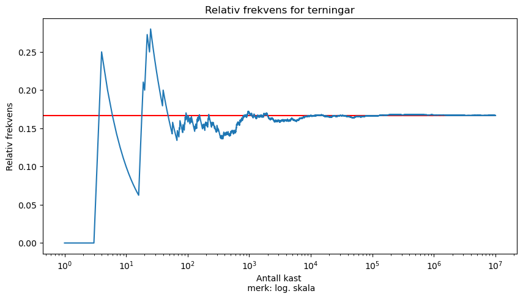

1 Terningar og intro til simulering
Ein fin stad å starta med simulering er med terningar 🎲 Her er sannsynet uniformt (det er like sannsynleg å få 2 som 5), og dei ulike utfalla er heiltal.
Det første som må gjerast er å gjera i stand “trekkaren” vår. Eg bruker her ein tilfeldighetsgenerator frå NumPy (dokumentasjon her).
Når me no har klargjort generatoren kan me bruka den innebygde integers-funksjonen for å trilla ein terning.
Dei to linjene med kode over må vera med i programmet for at det skal funka. I mange av døma i boka er ikkje desse to linjene med i alle kodesnuttane.
1.1 Ein terning 🎲
Her er verdien terning eit heiltal (integer) større eller lik 1 og mindre enn 7.
Sidan det er heiltal me trekk er dermed \[\text{terning} \in \{1, 2, 3, 4, 5, 6\}\]
For å trilla fleire terningar kan me anten bruka løkker:
eller så kan me legga inn eit argument size i integers. Då blir output ein array (ein form for liste) med size terningar:
No har me det me treng for å kunna simulera eit stokastisk forsøk og estimera sannsyn ut frå simuleringa. Til dømes kan me prøva å finna ut av kor sannunleg det er å trilla 5 eller 6 på ein terning:
N = 1000000 # tal simuleringar
terningar = rng.integers(1, 7, size=N)
gunstige = sum(terningar >= 5)
sannsyn = gunstige / N
print(f"Sannsynet for 5 eller 6 er {sannsyn:.4f}")Sannsynet for 5 eller 6 er 0.3336gunstige = sum(terningar >= 5)
For å forstå denne ser me på eit døme:
array = np.array([1, 2, 3, 4, 5, 6])
større_enn_3 = array > 3
print(array)
print(større_enn_3)
print(sum(større_enn_3))[1 2 3 4 5 6]
[False False False True True True]
3Altså gjer me om verdiar til True eller False. Python reknar True som 1 og False som 0. Når me då summerer alle elementa i array får me antall True i arrayen.
1.2 Fleire terningar 🎲 🎲
Spørsmål som “Kva er sannsynet for at produktet av to terningar er 8 eller mindre” er fint å finna svar på ved hjelp av simulering:
1.3 Nøyaktighet 🎯
Sjekkar kva som skjer når me triller fleire og fleire terningar (eller ein terning fleire gongar). For å visa samanhengen plottar me resultatet. I dømet ser me på sannsynet for å trilla 4 på ein terning.
import matplotlib.pyplot as plt
# antall kast
N = 10000000
# triller terningar
terningar = rng.integers(1, 7, size=N)
# finn den kumulative summen av terningar som er lik 4
kumulativ_sum = np.cumsum(terningar == 4)
# lager "x-akse" frå 1 til N
x = np.arange(1, N + 1)
# finn relativ frekvens
rel_frekvens = kumulativ_sum / x
plt.figure(figsize=(10, 5)) # lagar ein figur med 10x5 mål
plt.hlines(1/6, 0, N, color="red") # teiknar ein linje med farge "red" for den teoretiske verdien
plt.plot(x, rel_frekvens) # plottar x-akse og y-akse
plt.xscale("log") # logaritmisk x-akse
plt.xlabel("Antall kast \n merk: log. skala") # namn på x-aksen
plt.ylabel("Relativ frekvens") # namn på y-aksen
plt.title("Relativ frekvens for terningar") # tittel på figur
plt.show()
Her ser me at di fleire kast me gjennomfører, di nærare kjem den relative frekvensen den teoretiske verdien for å trilla ein firar på vanleg terning.
\[ P(\text{firar}) = \frac{1}{6} \approx 0.167 \]